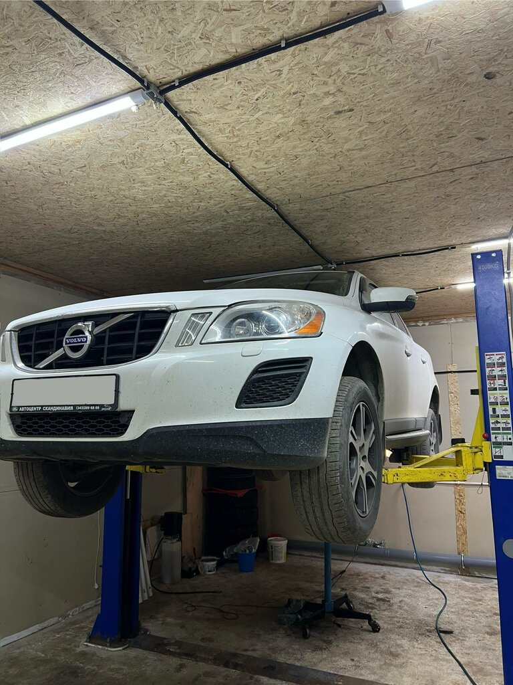

Шиномонтаж
Направление подтверждено карточкой Яндекс Карт. Размер колёс, нужные работы и стоимость уточните при звонке.
Автосервис и шиномонтаж в Верхней Пышме. Обсудите обслуживание автомобиля напрямую с мастерской.
Позвонить мастеру ↗Посмотреть место ↓Направление подтверждено карточкой Яндекс Карт. Размер колёс, нужные работы и стоимость уточните при звонке.
Компьютерная диагностика и диагностика подвески указаны в опубликованном объявлении сервиса.
Техническое обслуживание и ремонт автомобиля — направления, указанные самим сервисом в рекламной публикации.

Снимок из конкретной карточки предприятия. Дата съёмки не установлена; вид места может меняться.Микрорайон 12-й километр, Верхняя Пышма, Свердловская область. Точная точка находится в карточке на карте.
Перед поездкой свяжитесь с мастерской: уточните подъезд, время работы и возможность принять автомобиль.
Открыть точку на карте ↗Телефон совпадает в карточке Яндекс Карт и рекламной публикации сервиса.
Карточка и маршрут ↗Позвоните и расскажите о машине и задаче. На этом концепте нет неподтверждённых расценок.
Обсудите запись непосредственно с мастерской по указанному телефону. Сайт не принимает заявки от лица предприятия.
В старых источниках и ссылках встречается RedLap Auto. В проверенной карточке с тем же идентификатором и телефоном указано название «АвтоЛап».
Название, адрес и телефон проверены в Яндекс Картах. Дополнительное подтверждение — рекламная публикация сервиса. Собственный сайт поиском не найден, но отсутствие сайта не доказано. Звонок владельцу не проводился. Фотография принадлежит автору снимка; перед коммерческим использованием требуется согласование прав.